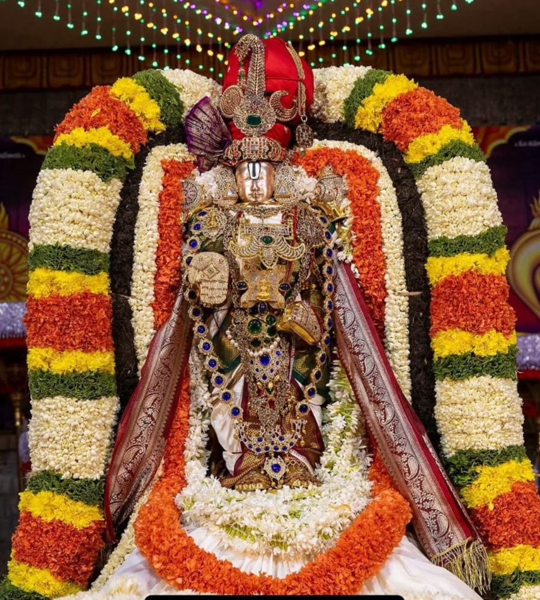
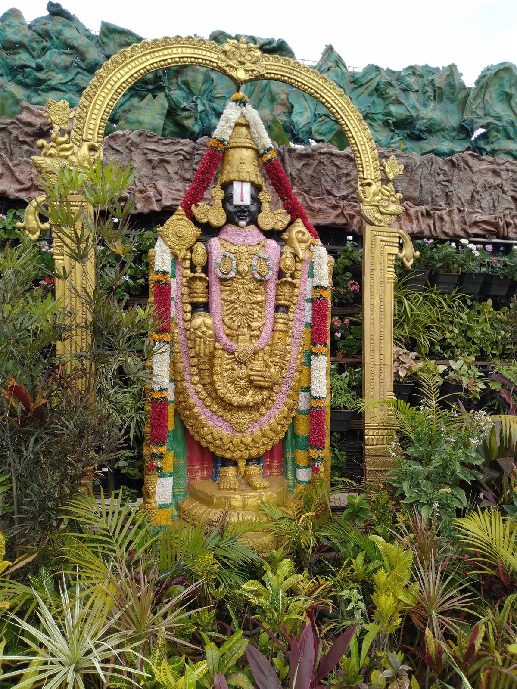
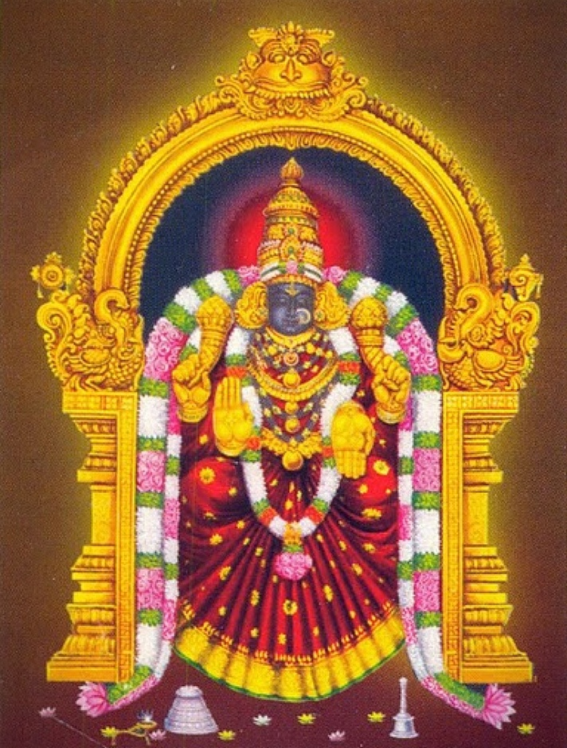

The idol of Sri Swamy vari was installed (Prathishta) on 27 January 2007, the sacred day of Bhishma Ekadasi. The temple has now served devotees for 19 years.
- Prathishta: 27-01-2007 (Bhishma Ekadasi)
- Deities: Sri Venkateswara Swamy with Sri Padmavathi Ammavaru and Sri Goda Devi
- Annual Utsavam: Every Bhishma Ekadasi
- Managed by: Sri Venkateswara Swamy vari Devasthana Committee, Narayanapuram Colony, Poranki (Reg. No. 10 of 2019)
ఆలయ దేవతలుOur Deities

శ్రీ వేంకటేశ్వరస్వామి
Sri Venkateswara Swamy
Moolavirat – the presiding deity, Lord of the Seven Hills
శ్రీ పద్మావతి అమ్మవారు
Sri Padmavathi Ammavaru
Divine consort of Sri Venkateswara Swamy
శ్రీ గోదాదేవి
Sri Goda Devi (Andal)
The saint-poetess of Tiruppavai, wedded to Sri RanganathaRepresentative images. Photos of the temple's own deities will be added soon.